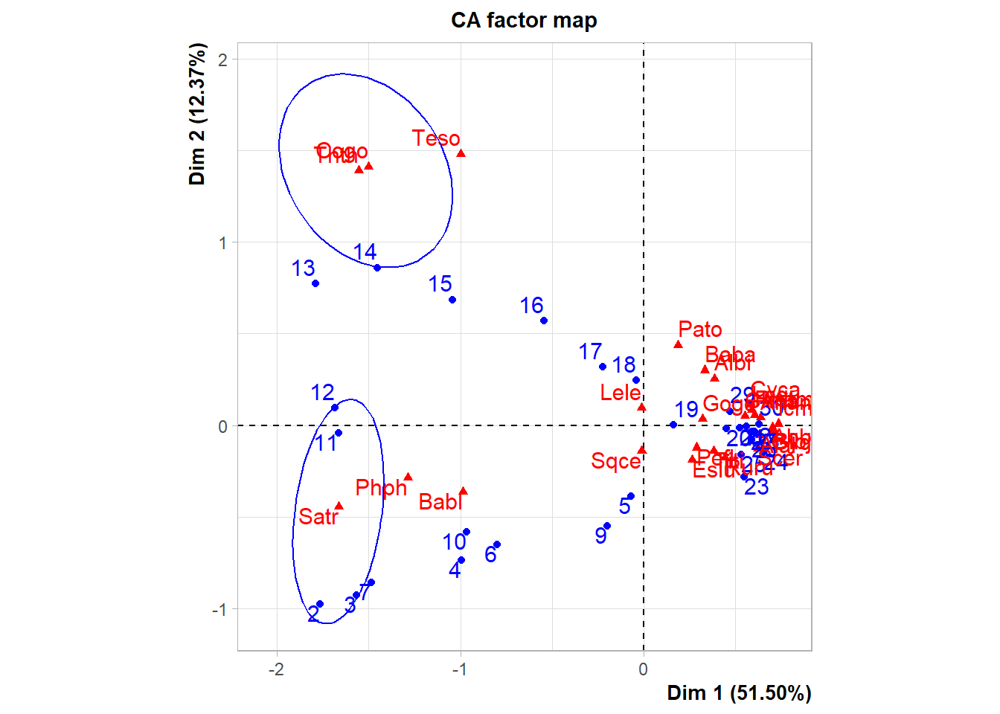
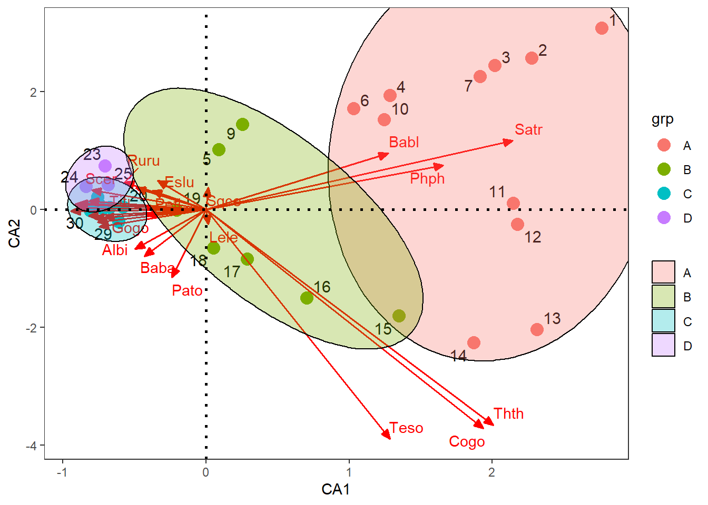
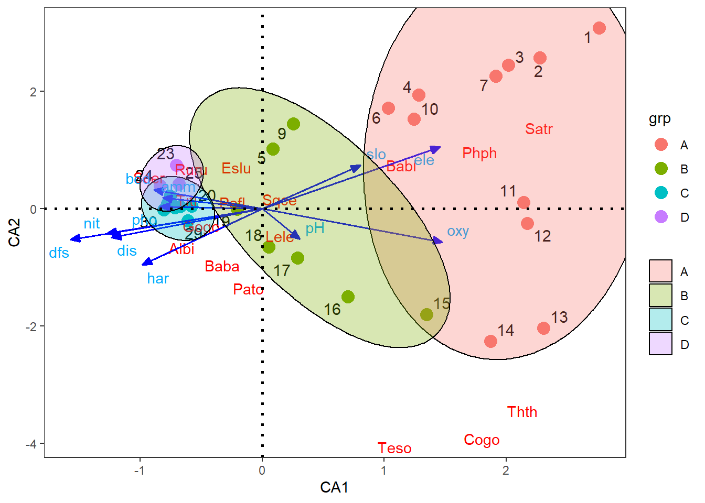

# Librerías requeridas
library(ade4)
library(vegan)
library(ca)
library(anacor)
library(FactoMineR)
library(factoextra)
library(ggplot2)
library(reshape2)
library(ggrepel)
library(kableExtra)
library(ggforce)
Objetivo de la actividad
La presente base de datos es tomada del libro Numerical Ecology With R Borcard eta al. 2018, para profundizar sobre la aplicación de dos técnicas de ordenación canónica multivariada de uso común en estudios ecológicos, que corresponden al análisis de correspondencia simple o clásico (CA). Para mejorar la comprensión de este documento se recomienda que sea complementado con el capítulo 6 del libro citado y correr su script (capitulo y script serán entregados por el docente). El objetivo de este ejercicio consiste en caracterizar a los tributarios de acuerdo a la abundancia de los speones de peces e incorporar a las variables ambientales mediante el comando enfit del paquete vegan, para valorar la relación de estos parámetros con el patrón de distribución y de abundancia de los peces.
Como soporte bibliográfico, se puede revisar el texto guía de Rodríguez-Barrios (2023), en el capítulo 6, sección 6.1, orientado al análisis de correspondencia simple.
En la página de STHDA también se pueden encontrar opciones gráficas al análisis de correspondencia simple.
Cargar librerías
Cargar las bases de datos
# Cargar las bases de datos
spe = read.csv2("DoubsSpe.csv",row.names=1)
env = read.csv2("DoubsEnv.csv",row.names=1)
# Suprimir el sitio 8
spe=spe[-8,]
env=env[-8,]
Generar la variable agrupadora (factor)
Esto se requiere para cuando no se cuenta con un factor o variable agrupadora. Para este caso se tendrá en cuenta la propuesta de Borcard et al. (2018), en la que definen cuatro grupos (grupos A al D).
# Generación del factor
datos.w <- hclust(vegdist(spe), "ward.D") # Grupos con Cluster con ward
grupo <- cutree(datos.w, k = 4) # Generar 3 grupos (factor grupo)
datos.gr=data.frame(grupo,spe) # Base de datos con el factor agrupador
datos.gr$grupo=as.factor(datos.gr$grupo) # Crear la columna gr como factor
rotulos <- c("A", "B", "C", "D") # Nuevos rótulos a los tres grupos creados
datos.gr$grupo <- factor(datos.gr$grupo,
labels = rotulos)
#str(datos.gr)
# Presentación de la tabla con las 10 primeras filas
datos.gr[1:10,] %>%
kbl(booktabs = F) %>%
kable_classic(full_width=F, html_font = "Cambria")| grupo | Cogo | Satr | Phph | Babl | Thth | Teso | Chna | Pato | Lele | Sqce | Baba | Albi | Gogo | Eslu | Pefl | Rham | Legi | Scer | Cyca | Titi | Abbr | Icme | Gyce | Ruru | Blbj | Alal | Anan | |
|---|---|---|---|---|---|---|---|---|---|---|---|---|---|---|---|---|---|---|---|---|---|---|---|---|---|---|---|---|
| 1 | A | 0 | 3 | 0 | 0 | 0 | 0 | 0 | 0 | 0 | 0 | 0 | 0 | 0 | 0 | 0 | 0 | 0 | 0 | 0 | 0 | 0 | 0 | 0 | 0 | 0 | 0 | 0 |
| 2 | A | 0 | 5 | 4 | 3 | 0 | 0 | 0 | 0 | 0 | 0 | 0 | 0 | 0 | 0 | 0 | 0 | 0 | 0 | 0 | 0 | 0 | 0 | 0 | 0 | 0 | 0 | 0 |
| 3 | A | 0 | 5 | 5 | 5 | 0 | 0 | 0 | 0 | 0 | 0 | 0 | 0 | 0 | 1 | 0 | 0 | 0 | 0 | 0 | 0 | 0 | 0 | 0 | 0 | 0 | 0 | 0 |
| 4 | A | 0 | 4 | 5 | 5 | 0 | 0 | 0 | 0 | 0 | 1 | 0 | 0 | 1 | 2 | 2 | 0 | 0 | 0 | 0 | 1 | 0 | 0 | 0 | 0 | 0 | 0 | 0 |
| 5 | B | 0 | 2 | 3 | 2 | 0 | 0 | 0 | 0 | 5 | 2 | 0 | 0 | 2 | 4 | 4 | 0 | 0 | 2 | 0 | 3 | 0 | 0 | 0 | 5 | 0 | 0 | 0 |
| 6 | A | 0 | 3 | 4 | 5 | 0 | 0 | 0 | 0 | 1 | 2 | 0 | 0 | 1 | 1 | 1 | 0 | 0 | 0 | 0 | 2 | 0 | 0 | 0 | 1 | 0 | 0 | 0 |
| 7 | A | 0 | 5 | 4 | 5 | 0 | 0 | 0 | 0 | 1 | 1 | 0 | 0 | 0 | 0 | 0 | 0 | 0 | 0 | 0 | 0 | 0 | 0 | 0 | 0 | 0 | 0 | 0 |
| 9 | B | 0 | 0 | 1 | 3 | 0 | 0 | 0 | 0 | 0 | 5 | 0 | 0 | 0 | 0 | 0 | 0 | 0 | 0 | 0 | 1 | 0 | 0 | 0 | 4 | 0 | 0 | 0 |
| 10 | A | 0 | 1 | 4 | 4 | 0 | 0 | 0 | 0 | 2 | 2 | 0 | 0 | 1 | 0 | 0 | 0 | 0 | 0 | 0 | 0 | 0 | 0 | 0 | 0 | 0 | 0 | 0 |
| 11 | A | 1 | 3 | 4 | 1 | 1 | 0 | 0 | 0 | 0 | 1 | 0 | 0 | 0 | 0 | 0 | 0 | 0 | 0 | 0 | 0 | 0 | 0 | 0 | 0 | 0 | 0 | 0 |
1. CA con el paquete vegan
Paso 1. Realización del CA
# Cálculo del CA para los peces, con el paquete vegan
ca1 <- cca(spe[,1:27])
ca1Call: cca(X = spe[, 1:27])
Inertia Rank
Total 1.167
Unconstrained 1.167 26
Inertia is scaled Chi-square
Eigenvalues for unconstrained axes:
CA1 CA2 CA3 CA4 CA5 CA6 CA7 CA8
0.6010 0.1444 0.1073 0.0834 0.0516 0.0418 0.0339 0.0288
(Showing 8 of 26 unconstrained eigenvalues)# summary(ca1) # por default lo hace con scaling 2
Paso 2. Componente gráfico del CA
En la Figure 1 se definen tres ejes significativos para la ordenación (CA 1 a CA3). Esto se define por el criterio de vara quebrada.
# Criterio de Vara quebrada unsando el comando screeplot.cca()
screeplot(ca1, bstick = TRUE, npcs = length(ca1$CA$eig),
main = deparse(substitute(Ejes.CA)), ylab = "Inercia")
La Figure 2 muestra los dos tipos de ordenación escalando las coordenadas de las localidades (scaling1) y de los taxones (scaling2).
# Biplot del CA
par(mfrow = c(1, 2))
# Scaling 1: Los sitios son centroides de las especies
plot(ca1, scaling = 1,
main = "Biplot en Saling 1")
# Scaling 2 (default): Las especies son centroides de los sitios
plot(ca1, main = "Biplot en Saling 2")
En la Figure 3 se incorpora a las variables ambientales, mediante el comando enfit.
# Incluir las variables ambientales en el CA
plot(ca1, main = "Biplot - scaling 2",
sub = "Curvas ajustadas: descarga (rojo), ammonio (verde)")
# Inserción de elementos a la figura
ca1.env <- envfit(ca1 ~ dis + amm, env)
plot(ca1.env) # Variables ambientales
ordisurf(ca1, env$dis, add = TRUE) # Líneas rojas - descarga
Family: gaussian
Link function: identity
Formula:
y ~ s(x1, x2, k = 10, bs = "tp", fx = FALSE)
Estimated degrees of freedom:
4.29 total = 5.29
REML score: 123.1156 ordisurf(ca1, env$amm, add = TRUE, col = "green") # Líneas verdes - amonio
Family: gaussian
Link function: identity
Formula:
y ~ s(x1, x2, k = 10, bs = "tp", fx = FALSE)
Estimated degrees of freedom:
1.16 total = 2.16
REML score: 2.949274 
2. CA con el paquete ca
Paso 1. Realización del CA
# Comando CA, del paquete CA
ca2 <- ca(spe)
Paso 2. Componente gráfico del CA
La Figure 4 a diferencia de las anteriores, incorpora a la varianza que captura cada eje canónico en la ordenación.
# summary(ca2(spe))
plot(ca2)
3. CA con el paquete factominer
Paso 1. Realización del CA
# CA de los paquetes "factominer y factoextra"
ca3 <- CA (spe, graph = FALSE)
# summary(ca3)
# print(ca3)
Paso 2. Componente gráfico del CA
La Figure 5 Es complementaria al anterior ca (ca2), incluyendo elipses al rededor de algunas especies de peces.
# Elipses sobre algunas especies de peces
ellipseCA(ca3,ellipse="col",
col.col.ell=c(rep("blue",2),
rep("transparent",3)),
invisible=c("row.sup","col.sup"))
4. CA con el paquete factominer
Se utilizará el paso 1 del anterior ca.
Paso 2. Componente gráfico del CA
La Figure 6 muestra cómo el primer eje canónico captura la mayor parte de la varianza de los datos.
# Figura de autovalores (para la escogencia de ejes)
fviz_screeplot(ca3, addlabels = TRUE, ylim = c(0, 60),
ylab = "% Varianza explicada",
xlab = "Dimensiones",
col="steelblue")
La Figure 7 muestra la ordenación de las especies de peces, dentro d elos dos ejes canónicos.
# Ordenación de los speones
fviz_ca_col (ca3, repel = TRUE, # Repel evita superposición de texto
ggtheme = theme_minimal()) # theme_minimal: Comprime relaciones de variables y de observaciones
La Figure 8 muestra la ordenación de las localidades, dentro d elos dos ejes canónicos.
# Ordenación de las observaciones (sitios y periodos clim?ticos)
fviz_ca_row (ca3, repel = TRUE, # Repel evita superposición de texto
geom = c("point","text")) # theme_minimal: Comprime relaciones de variables y de observaciones
La Figure 9 muestra la ordenación de las localidades y de los taxones de peces, dentro d elos dos ejes canónicos.
# Figura del Biplot de ordenación para sitios y speones
fviz_ca_biplot (ca3, repel = TRUE, # Repel evita superposición de texto
ggtheme = theme_minimal())
La Figure 10 muestra la ordenación de las localidades y de los peces de mayor ontribución en los dos ejes canónicos.
# Seis speones con mayor contribución a la ordenación
fviz_ca_biplot(ca3,
select.row = list(contrib = 6),
select.col = list(contrib = 4))
La Figure 11 muestra otra forma de ordenar a las localidades de mayor contribución en los dos ejes canónicos.
# Localidades con mayor contribución al CA
fviz_ca_row(ca3, col.row = "cos2",
gradient.cols = c("#00AFBB", "#E7B800", "#FC4E07"),
repel = TRUE)
La Figure 12 muestra otra forma de ordenar a las especies de peces de mayor contribución en los dos ejes canónicos.
# Categorías de frecuencia de compra con mayor contribución al CA
fviz_ca_col(ca3, col.col = "cos2",
gradient.cols = c("#00AFBB", "#E7B800", "#FC4E07"),
repel = TRUE)
5. CA con el paquete ggplot2
Paso 1. Realización del CA
Se utilizará el paso 1 del paquete vegan (ca1).
# Insumos del RDA parsimonioso o que resume a las tres variables
ca1 <- cca(spe)
#names(ca3)
1.1 Coordenadas de los sitios y el factor “coord.sit”
# 1) Coordenadas de los sitios el factor "coord.sit"
coord.sit <- as.data.frame(ca1$CA$u[,1:2]) # Coordenadas de los sitios
coord.sit$sitio <- rownames(coord.sit) # Crear una columna con nombres de los sitios
coord.sit$grp <- datos.gr$grupo # Adicionar columna de grupos por Epoca
head(coord.sit) # vista resumida de las coordenadas de sitios CA1 CA2 sitio grp
1 2.76487587 3.076306 1 A
2 2.27540438 2.565531 2 A
3 2.01822931 2.441224 3 A
4 1.28485306 1.935664 4 A
5 0.08874624 1.015182 5 B
6 1.03187578 1.712163 6 A
1.2 Coordenadas de las especies “coord.spe”
# 2) Coordenadas de los speones "coord.spe"
coord.spe <- as.data.frame(ca1$CA$v[,1:2]) # Dos primeros ejes
coord.spe$especies <- rownames(coord.spe) # Insertar columna con nombres de las especies
head(coord.spe) CA1 CA2 especies
Cogo 1.935863 -3.7116716 Cogo
Satr 2.143434 1.1688783 Satr
Phph 1.658138 0.7509378 Phph
Babl 1.272671 0.9498334 Babl
Thth 2.006536 -3.6576095 Thth
Teso 1.286173 -3.8948706 Teso
1.3 Coordenadas de las variables ambientales “coord.amb”
# 3) Coordenadas de las ambientales "coord.amb"
amb1 = envfit(ca1,env)
coord.amb = as.data.frame(scores(amb1, "vectors"))
coord.amb$amb <- rownames(coord.amb) # Insertar columna con nombres de las ambientales
head(coord.amb) CA1 CA2 amb
dfs -0.7870185 -0.2642481 dfs
ele 0.7294510 0.5251086 ele
slo 0.4023523 0.3684084 slo
dis -0.6186136 -0.2476513 dis
pH 0.1528726 -0.2597382 pH
har -0.4929049 -0.4788158 har
Paso 2. Componente gráfico del CA
2.1 Biplot para ordenar las localidades y las especies
La Figure 13 muestra la ordenación de las localidades o tributarios con las especies de peces, en los cuatro grupos generados.
# 1) Figura con vectores de especies
ggplot() +
# Sitios
geom_text_repel(data = coord.sit,aes(CA1,CA2,label=row.names(coord.sit)),
size=4)+ # Muestra el cuadro de la figura
geom_point(data = coord.sit,aes(CA1,CA2,colour=grp),size=4)+
scale_shape_manual(values = c(21:25))+
# speones
geom_segment(data = coord.spe,aes(x = 0, y = 0, xend = CA1, yend = CA2),
arrow = arrow(angle=22.5,length = unit(0.25,"cm"),
type = "closed"),linetype=1, size=0.6,colour = "red")+
geom_text_repel(data = coord.spe,aes(CA1,CA2,label=especies),colour = "red")+
# Factor
geom_mark_ellipse(data=coord.sit,aes(x=CA1,y=CA2,fill=grp,group=grp),alpha=0.30) +
geom_hline(yintercept=0,linetype=3,size=1) +
geom_vline(xintercept=0,linetype=3,size=1)+
guides(shape=guide_legend(title=NULL,color="black"),
fill=guide_legend(title=NULL))+
theme_bw()+theme(panel.grid=element_blank())
2.2 Biplot para ordenar las localidades, las especies y las variables ambientales
La Figure 14 muestra la ordenación de las localidades o tributarios con las especies de peces y las variables ambientales como vectores, en los cuatro grupos generados.
ggplot() +
# Sitios
geom_text_repel(data = coord.sit,aes(CA1,CA2,label=row.names(coord.sit)),
size=4)+ # Muestra el cuadro de la figura
geom_point(data = coord.sit,aes(CA1,CA2,colour=grp),size=4)+
scale_shape_manual(values = c(21:25))+
# especies
geom_segment(data = coord.spe,aes(x = 0, y = 0, xend = CA1, yend = CA2),
arrow = arrow(angle=0,length = unit(0,"cm"),
type = "closed"),linetype=0, size=0,colour = "red")+
geom_text_repel(data = coord.spe,aes(CA1,CA2,label=especies),colour = "red")+
# Ambiental
geom_segment(data = coord.amb,aes(x = 0, y = 0, xend = 2*CA1, yend = 2*CA2),
arrow = arrow(angle=22.5,length = unit(0.25,"cm"),
type = "closed"),linetype=1, size=0.6,colour = "blue")+
geom_text_repel(data = coord.amb,aes(2*CA1,2*CA2,label=row.names(coord.amb)),colour = "#00abff")+
geom_mark_ellipse(data=coord.sit,aes(x=CA1,y=CA2,fill=grp,group=grp),alpha=0.30) +
geom_hline(yintercept=0,linetype=3,size=1) +
geom_vline(xintercept=0,linetype=3,size=1)+
guides(shape=guide_legend(title=NULL,color="black"),
fill=guide_legend(title=NULL))+
theme_bw()+theme(panel.grid=element_blank())
Taller de entrenamiento
Objetivo: Poner en práctica los conceptos vistos en este taller, realizando las siguientes opciones realizando un PCA que integgre a las variables biológicas (taxones) y a las ambientalñes de la base seleccionada. Enviar los resultados al Teams del profesor.